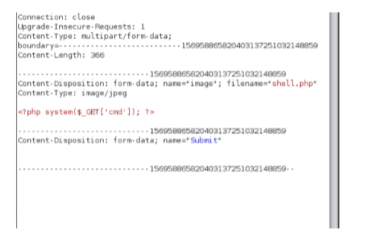

kali tool
https://github.com/almandin/fuxploider.git
uxploider is an open source penetration testing tool
that automates the process of detecting and exploiting file upload forms flaws
Client Side Validation
We were able to bypass this type of validation by uploading a regular image via the browser then manipulating the request by changing the extension that will be sent to the server and also the actual content of the file. In this case we renamed the file and used a .php extension instead of .jpeg extension and we also replaced the content of the file by malicious code

Server Side Validation file extention
File name validation is when the server validate the file that being uploaded by checking its extension,
this validation happens based on two methods, Blacklisting File Extensions and Whitelisting File Extensions.
Blacklisting
File extensions is a type of protection where only a specific extensions are being rejected from the server,
Whitelisting
File extensions is the exact opposite, Only a few file extensions are allowed to be uploaded to the server, Such as jpg, jpeg, gif.
Blacklisting Bypass:
Blacklisting can be bypassed by uploading an unpopular php extensions. such as: pht, phpt, phtml, php3,php4,php5,php6,pHp, Php, phP
Whitelisting Bypass:
Whitelisting can be bypassed by uploading a file with some type of tricks, Like adding a null byte injection like ( shell.php%00.gif ). Or by using double extensions for the uploaded file like ( shell.jpg.php ).


CONTENT-TYPE VALIDATION
This type of validation can be bypassed by changing the file name for example to “shell.php” or “shell.aspx” but keeping the “Content-Type” parameter as “image/ *” Content-Type. Such as “image/png”, “image/jpeg”, and “image/gif”.

CONTENT-LENGTH BYPASS
This type of validation can be bypassed by uploading a very short malicious code within the uploaded file depending on the maximum size restriction on the web server, We can figure the specific size on the web server by fuzzing the file uploader with different file sizes and checks whether it accepts the file or not.